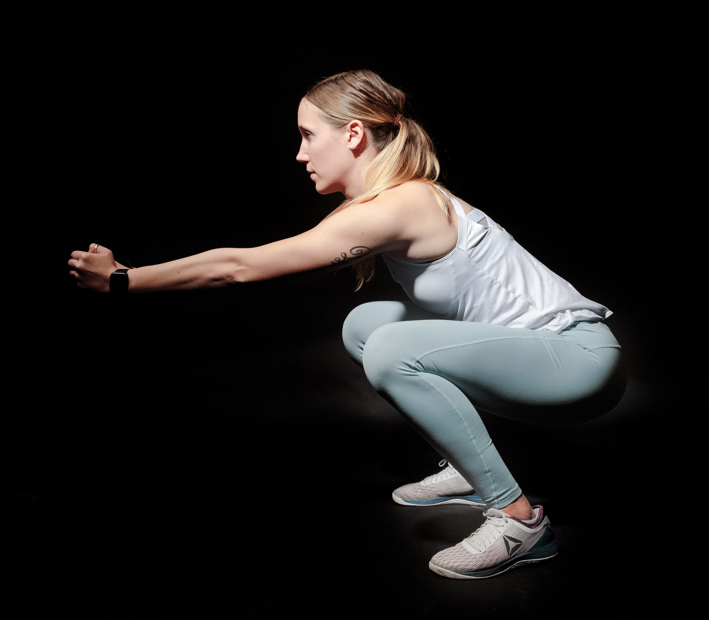
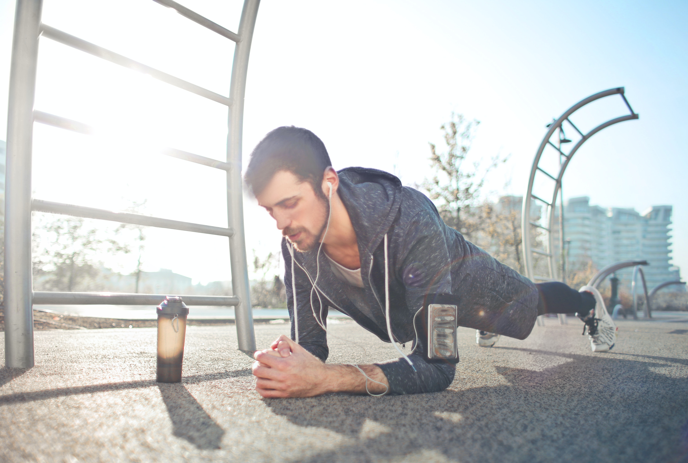
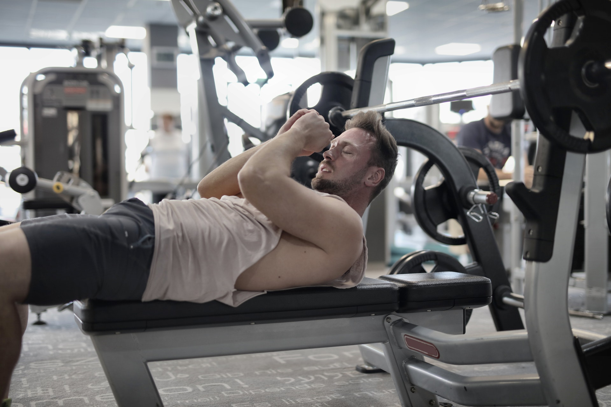

Приседания
Приседания эффективно прокачивают бедра и ягодицы. Так же они помогают
развить
чувство равновесия и улучшить гибкость. В этом упражнении задействовано 250 мышц.
Правильная техника приседаний: расстояние между ног на
ширине плеч.
Ноги должны быть немного согнуты, колени азводятся в противоположные стороны. Не наклоняйтесь
вперед.
В полном приседе ноги должны быть согнуты под прямым углом . В случае более натренированных
людей допускается угол 60 градусов.
Ошибки: Самые частые ошибки это разведение и сведение коленей, отрыв носков от
пола,
недостаточное отведение ягодиц назад, округление спины и несоблюдение прямого угла в колене, когда
колени выходят за носки.

Планка
Планка считается наиболее эффективным упражнением для всего тела.
Укрепляет пресс, спину, ягодицы и ноги, а также способствует избавлению от жировых отложений
.
Правильная техника приседаний: расстояние между ног на
ширине плеч.
Ноги должны быть немного согнуты, колени азводятся в противоположные стороны. Не наклоняйтесь
вперед.
В полном приседе ноги должны быть согнуты под прямым углом . В случае более натренированных
людей допускается угол 60 градусов.
Ошибки: Самые частые ошибки это разведение и сведение коленей, отрыв носков от
пола,
недостаточное отведение ягодиц назад, округление спины и несоблюдение прямого угла в колене, когда
колени выходят за носки.

Прыжки на скакалке
Скакалка это отличное упражение для быстрого похудения. Прыжки помогут
сбросить вес, а также задействуют мышцы рук, ног, спины и живота .
Правильная техника прыжков: Начинать нужно с 1-2 минут и
постепенно увеличивать до 10 минут.
Старайтесь не сгибайте сильно ноги в коленях, пружиньте только на носках. Задействуйте икроножные
мышцы, приземляйтесь на носки.
Ошибки: Не прыгайте на всей стопе. Подпрыгивать нужно на носках, приземление
также обязательно на носки.
Не сгибайте ноги во время прыжков. При приземлении амортизируйте, а отталкиваясь выпрямляйте.
Не разводите руки широко от тела - из-за этого они быстро устают. Правильное положение рук во время
прыжков: локти рядом с телом, слегка отведены назад, кисти находятся немного спереди. Руки согнуты в
локтях, расслаблены.

Скурчивания
Скурчивания помогут сделать талию красивой и стройной.
Техника выполнения: нужно лечь на спину и согнуть ноги в коленях.
При выполнение руки надо держать у висков, а подъем должен происходить за счет мышц пресса.
Медленно поднимайте
верхнюю часть тела. На подъеме - глубокий выдох, вдох - в нижнем положении.
Ошибки: не поднимайтесь слишком высоко, так вы переносите нагрузку с прямых мышц живота на сгибательные бедра.
Так же нельзя расслабляться по пути вниз, так вы делаете только половину упражнения. Так же не надо задерживать дыхание во время упражнения.
